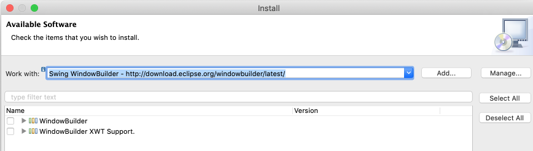

{% extends "../_base_template.html" %}
{% block title %}Lektion 1 - Willkommen{% endblock %}

{% block sections %}
<section data-markdown>
<textarea data-template>
<i class="fas fa-graduation-cap"></i> M326 - 1 Einstieg, Willkommen
=============================

Objektorientiert entwerfen und implementieren

Heutiges Ziel
-------------

* Willkommen!
* Infos zur Organisation des Unterrichts
* Semester-Agenda: was machen wir überhaupt?
* Inbetriebnahme der Unterrichts-Tools
  * VS Code + Plugins für Markdown und PlantUML
  * (ev) Eclipse / Java
* Kennenlernen Markdown, PlantUML
* Kurzrepetition: Klassen, Vererbung, Polymorphismus
</textarea>
</section>

<section data-markdown>
<textarea data-template>
<i class="fas fa-graduation-cap"></i> Wie stelle ich mir den Unterricht vor?
======================================

* interaktiver Unterricht - viel Praxis
* Fragen werden direkt gestellt - von mir und von Ihnen!
* Fehler sind erlaubt / erwünscht!
* Auch ich mache Fehler / weiss nicht alles!
* Möglichst alles digital - kein Papier
* Meine Erwartungen an Sie:
  * Aufmerksamkeit während des Unterrichts
  * Beteiligung bei Diskussionen
  * Ehrlichkeit (Absenzen, Aufgaben)
  * Hausaufgaben lösen - sind Teil des Unterrichtsstoffes
</textarea>
</section>

<section data-markdown>
<textarea data-template>
<i class="fas fa-gavel"></i> Regeln
======================================

* Wir (Sie und ich) sind pünktlich
* Bei Diskussionen / Präsentation bleiben Laptops / Handys geschlossen
* Es wird **Schriftsprache** gesprochen (Ausnahmen bestätigen die Regel ;-))
</textarea>
</section>


<section data-markdown>
<textarea data-template>
 Organisatorisches
======================================

* alle Unterlagen werden via Moodle elektronisch abgegeben (https://moodle.bztf.ch/course/view.php?id=1633)
* Als Dokumentations- und UML-Tool verwenden wir [Markdown](https://en.wikipedia.org/wiki/Markdown) mit [ PlantUML ](https://plantuml.com) 
  - das ist die einfachste Art, UML-Diagramme inkl. Beschreibungstexte zu generieren. Wir verwenden dazu VS Code mit entsprechenden Plugins.
* Hausaufgaben: **bis am Tag vor der Lektion** abgegeben (Aufgaben jeweils auf Moodle)
* Die Hausaufgaben sind Teil des Unterrichts-Stoffes. Es liegt in Ihrer Verantwortung, diese zu machen.
* Pausen: Ich möchte auf die 5-minuten-Pause verzichten, und lasse Sie lieber 5min früher gehen - sind Sie damit
  einverstanden?

Organisation Moodle
---------------------

* Alle Unterlagen elektronisch auf Moodle
* Ich publiziere jede Woche eine neue Version der Unterrichtsunterlagen
* <i class="far fa-hand-point-right"></i> Wir schauen es uns an
</textarea>
</section>


<section data-markdown>
<textarea data-template>
<i class="fas fa-calendar"></i> Semester-Agenda
======================================

ICT-Modul 326: https://cf.ict-berufsbildung.ch/modules.php?name=Mbk&a=20101&cmodnr=326&noheader=1

**Mein Ziel für Sie**: Sie lernen, wie Sie von der Idee (des Kunden) bis zur Umsetzung in Software gelangen.

* **Grundkonzepte der Objektorientierung**
  * Folgende Grundkonzepte setze ich VORAUS und werden wir nicht mehr behandeln:
    * Kapselung, Klassen, Vererbung, Abstrakte Klassen, Interfaces, Polymorphismus, Overloading, Overriding
*  Einführung (OO-)Analyse und Design: Probleme bei der SW-Entwicklung, Ziele, Vorgehensweise
*  Objektorientierte **Analyse**: Überblick
  * Use Cases, Klassenfindung, Beziehungen, Aktivitäts- und Zustandsdiagramme, UML
*  Objektorientiertes **Design und Implementation**
  * Systemarchitekturen, Framework, Libraries
  * Schritte zum objektorientierten Design, UML
  * Design Patterns (**Kurzreferate zu Design Pattern**)
* **Testing**
  * Entwickeln von Testfällen und -Protokollen
* Fallstudie **(Modulprüfung, LBV 326-1, 06.01.2022, 4 Lektionen Fallstudie, Abtausch mit C. Inauen)**
</textarea>
</section>


<section data-markdown>
<textarea data-template>
<i class="fas fa-code"></i> Programmiersprache
======================================

* Wir verwenden **beispielhaft** Java mit **Swing UI**
* Wir entwickeln eine sehr einfache GUI-Applikation: Es geht um die grundlegenden Konzepte, nicht um UI-Design.
* Machen Sie sich selbständig mit VS Code / Eclipse und Basis-Java-Wissen vertraut.
* Wir bearbeiten ein durchgängiges Beispiel: es wird ein **Bibliothekssystem** entworfen und Teil-implementiert
</textarea>
</section>


<section>
<section data-markdown>
<textarea data-template>
<i class="fas fa-desktop"></i> Unterrichts-Tools
======================================

* Wir installieren die notwendigen Tools für den Unterricht
  * [Visual Studio Code](https://code.visualstudio.com/), mit folgenden Plugins:
    * [Markdown All in One-Plugin](https://marketplace.visualstudio.com/items?itemName=yzhang.markdown-all-in-one)
    * [Java Extension Pack](https://marketplace.visualstudio.com/items?itemName=vscjava.vscode-java-pack)
    * [PlantUML Plugin](https://marketplace.visualstudio.com/items?itemName=jebbs.plantuml)
  * (optional) Eclipse IDE: Mind. Java 8, mind. Eclipse Mars (benötigen wir ab dem Kapitel OOD)
  * (optional) Eclipse Window Builder Plugin: http://download.eclipse.org/windowbuilder/latest/


</textarea>
</section>
<section data-markdown>
<textarea data-template>
<i class="fas fa-desktop"></i> Unterrichts-Tools - Markdown mit PlantUML
======================================

1. Installieren Sie VS Code mit den Plugins, wie oben angegeben
2. Konfigurieren Sie das **PlantUML-Plugin**:

<br />oder im JSON-Config:
```
{ "plantuml.server": "https://www.plantuml.com/plantuml"}
```
Dies erlaubt das direkte Rendern von PlantUML-Diagrammen in Markdown/HTML-Output-Files.

(nächste Folie)

</textarea>
</section>
<section data-markdown>
<textarea data-template>
<i class="fas fa-desktop"></i> Unterrichts-Tools - Markdown mit PlantUML
======================================

**Hello World mit Markdown und PlantUML**

Erstellen Sie ein File `hello.md` mit folgendem Inhalt:

```markdown
# Hello, world!

Dies ist **Markdown**. Nun kommt ein PlantUML-Diagramm:

`&#8203;`&#8203;`plantuml
@startuml
title Hello, PlantUML

class A {}
class B {}
A <|-- B: Vererbung
@enduml
`&#8203;`&#8203;`
```

Wählen Sie dann in VS Code "Markdown: Open Preview to the side":

<div style="width: 70%">


</div>

</textarea>
</section>
</section>

<section data-markdown>
<textarea data-template>
<i class="fas fa-desktop"></i> Repetition Klassen / Vererbung / Polymorphismus
======================================

**Im Selbststudium**

* Wir befassen und **ganz kurz** nochmals mit den Grundlagen der objektorientierten Programmierung
* [ siehe nächste Folien ](./unterricht_polymorphismus.html)
</textarea>
</section>

<section data-markdown>
<textarea data-template>
<i class="fas fa-desktop"></i> (Haus-)Aufgaben
======================================

* Übung "Repetition Grundkonzepte" auf Moodle
* HA: Übung zu Klassen, Vererbung, Polymorphismus

</textarea>
</section>


{% endblock %}
